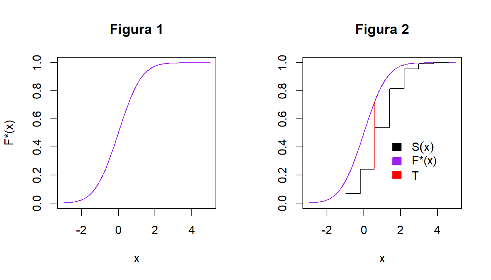

Capítulo 20 Prueba Kolmogorov
Comenzaremos con una prueba de bondad de ajuste que fue presentada por Kolmogorov (1933). Esta prueba es quizás la más útil, en parte porque nos proporciona una alternativa, diseñada para datos ordinales, a la prueba \(\chi^2\) para bondad de ajuste, que fue diseñada para datos de tipo nominal, y en parte porque la estadística de prueba de Kolmogorov nos permite formar una “banda de confianza” para la función de distribución desconocida.
Una prueba de bondad de ajuste generalmente involucra una muestra aleatoria de alguna distribución desconocida para probar la hipótesis nula de que la función de distribución desconocida es de hecho una función conocida y especificada. Esto es, la hipótesis nula especifica alguna función de distribución \(F ^*(x)\), tal vez gráficamente como en la figura 1, o tal vez como una función matemática que puede ser graficada. Luego se toma una muestra aleatoria, \(X_{1},X_{2},\ldots, X_{n}\) de alguna población y se compara con \(F^*(x)\) de alguna manera para ver si es razonable decir que, \(F^*(x)\) es la verdadera función de distribución de la muestra aleatoria.
Una forma lógica de comparar la muestra aleatoria con \(F^*(x)\) es mediante la función de distribución empírica \(S(x)\), definida como la fracción de \(X_{i}s\) que son menores o iguales a \(x\), para cada \(x\), \(-\infty<x< + \infty\). La función de distribución empírica \(S(x)\) es útil como estimador de \(F(x)\), la función de distribución desconocida de la \(X_{i}s\). Entonces podemos comparar la función de distribución empírica \(S(x)\) con la función de distribución hipotética \(F^*(x)\) para ver si hay un buen ajuste. Si no hay un buen ajuste, entonces podemos rechazar la hipótesis nula y concluir que la función de distribución verdadera pero desconocida, \(F(x)\), en realidad no está dada por la función \(F^*(x)\) en la hipótesis nula.

Pero, ¿qué tipo de estadística de prueba podemos usar como medida de la diferencia entre \(S(x)\) y \(F^* (x)\)? Una de las medidas más simples imaginables es la mayor distancia entre los dos gráficos \(S(x)\) y \(F^*(x)\), medidos en dirección vertical. Ésta es la estadística sugerida por Kolmogorov (1993). Es decir, si la figura 1 proporciona \(F^*(x)\) y se extrae una muestra aleatoria de tamaño 5 de la población, la función de distribución empírica \(S(x)\) se puede dibujar en el mismo gráfico junto con \(F^ *(x)\), como se muestra en la figura 2. Si \(F^*(x)\) y \(S(x)\) son como se indica, la distancia vertical máxima entre los dos gráficos se produce justo antes del tercer paso de \(S(x)\). Esta distancia es de aproximadamente 0.5 en la figura 2; por lo tanto, el estadístico Kolmogorov T es igual a 0.5 en este caso. Los valores grandes de \(T\) según lo determinado por la correspondiente tabla (Tabla de Cuantiles Kolmogorov) conducen a rechazar \(F^*(x)\) como una aproximación razonable a la función de distribución verdadera desconocida \(F(x)\).
La prueba de Kolmogorov puede preferirse a la prueba de Ji-Cuadrada para bondad del ajuste si el tamaño de la muestra es pequeño; la prueba de Kolmogorov es exacta incluso para muestras pequeñas, mientras que la prueba de Ji-cuadrada supone que el número de observaciones es lo suficientemente grande como para que la distribución de \(\chi^2\) proporcione una buena aproximación como la distribución del estadístico de prueba. Existe controversia sobre ¿qué prueba es la más “poderosa?” pero la sensación general parece ser que la prueba de Kolmogorov es probablemente más poderosa que la prueba de Ji-cuadrada en la mayoría de las situaciones que involucran datos ordinales.
20.1 Datos
Los datos consisten en una muestra aleatoria \(X_{1},X_{2},\ldots,X_{n}\) de tamaño \(n\) asociada con alguna función de distribución desconocida, denotada por \(F(x)\).
20.2 Supuestos
- La muestra es una muestra aleatoria.
20.3 Estadístico de Prueba
Sea \(S(x)\) la función de distribución empírica basada en la muestra aleatoria \(X_{1},X_{2},\ldots,X_{n}\). El estadístico de prueba es definido diferente para los 3 casos para las hipótesis correspondientes. Sea \(F^*(x)\) una función de distribución hipotética completamente especificada.
Caso A (Prueba de 2 colas)
Sea el estadístico de prueba \(T\) la mayor distancia vertical entre \(S(x)\) y \(F^*(x)\)(denotado por sup o el supremo).
\[T=\underset{x}{sup}|F^*(x)-S(x)|\]
Esto se lee “\(T\) es igual al supremo para todas las \(x\), del valor absoluto de la diferencia de \(F^*(x)-S(x)\)”
Caso B (Prueba de 1 cola)
Denotamos el estadístico de prueba \(T^+\) la mayor distancia vertical alcanzada por \(F^*(x)\) sobre \(S(x)\).
\[T^+=\underset{x}{sup}[F^*(x)-S(x)] \] Que es similar a \(T\), a excepción que solo vamos a considerar la mayor diferencia alcanzada por \(F^*(x)\) sobre la función \(S(x)\).
Caso C (Prueba de 1 cola)
Denotamos el estadístico de prueba \(T^-\) la mayor distancia vertical alcanzada por \(S(x)\) sobre \(F^*(x)\).
\[T^-=\underset{x}{sup}[S(x)-F^*(x)] \] Que es similar a \(T\), a excepción que solo vamos a considerar la mayor diferencia alcanzada por \(S(x)\) sobre la función \(F^*(x)\).
20.4 Hipótesis
Caso A (Prueba de 2 colas)
\[\textbf{H}_0:\ F(x)=F^*(x) \ \ \ \ \forall \ \ x \ \ \ \mbox{de}\ \ -\infty \ \ \ \mbox{a} \ +\infty \]
\[vs\]
\[\textbf{H}_a: \ F(x) \neq F^*(x) \ \ \ \ \mbox{para al menos un valor de} \ x.\]
Regla de decisión
Rechazo \(H_0\) a un nivel de significancia \(\alpha\) si \(T>W\). Donde \(W\) es el cuantil \((1-\alpha)\), obtenido en la tabla correspondiente a nuestra prueba, para la prueba de 2 colas.
Caso B (Prueba de 1 cola)
\[\textbf{H}_0: \ F(x) \geq F^*(x) \ \ \ \ \forall\ x\ \ \mbox{de} \ \ -\infty \ \ \ \mbox{a} \ \ +\infty\]
\[vs\]
\[Ha: \ F(x) < F^*(x) \ \ \ \ \mbox{para al menos un valor de} \ x.\]
Regla de decisión
Rechazo \(H_0\) a un nivel de significancia \(\alpha\) si \(T^+>W\). Donde \(W\) es el cuantil \((1-\alpha)\),obtenido en la tabla correspondiente a nuestra prueba, para la prueba de 1 cola.
Caso C (Prueba de 1 cola)
\[\textbf{H}_0:\ F(x) \leq F^*(x) \ \ \ \ \forall \ \ x \ \ \mbox{de} \ \ -\infty \ \ \mbox{a} \ \ +\infty\]
\[vs\]
\[\textbf{H}_a: \ F(x) > F^*(x) \ \ \ \ \mbox{para al menos un valor de} \ x.\]
Regla de decisión
Rechazo \(H_0\) a un nivel de significancia \(\alpha\) si \(T^->W\). Donde \(W\) es el cuantil \((1-\alpha)\),obtenido en la tabla correspondiente a nuestra prueba, para la prueba de 1 cola.
Vamos a aplicar este conocimiento en un ejemplo:
20.5 Ejemplo
Una muestra aleatoria de tamaño 10, es obtenida:
\(X_{1}=0.621,\ \ X_{2}=0.503, \ \ X_{3}=0.203, \ X_{4}=0.477, \ X_{5}=0.710, \ X_{6}=0.581, \\ X_{7}=0.329, \ X_{8}=0.480, \ X_{9}=0.554, \ X_{10}=0.382\)
La hipótesis nula es que la función de distribución es una función de distribución uniforme. La expresión matemática de función de distribución hipotética es:
\[ \textbf{F*(x)=} \left\{ \begin{array}{lcc} 0 & si & x < 0 \\ x & si & 0 \leq x < 1 \\ 1 & si & 1 \leq x \\ \end{array} \right. \]
Paso 1 Prueba a utilizar Prueba de Bondad de Ajuste Kolmogorov
Paso 2 Planteamiento de Hipótesis
\[\textbf{H}_0: \ F(x)=F^*(x) \ \ \ \ \forall \ \ x \ \ \mbox{de} \ \ -\infty \ \ \mbox{a} \ \ +\infty\]
\[vs\]
\[\textbf{H}_a: \ F(x) \neq F^*(x) \ \ \ \ \mbox{para al menos un valor de} \ x.\]
- Donde F(x) es la función de distribución desconocida común a las \(X_{i}s\) y \(F^*(x)\) se da por la expresión matemática.
\[ \textbf{F*(x)=} \left\{ \begin{array}{lcc} 0 & si & x < 0 \\ x & si & 0 \leq x < 1 \\ 1 & si & 1 \leq x \\ \end{array} \right. \]
Paso 3 Estadístico de Prueba
Calculamos el Estadístico de Prueba:
\[T=\underset{x}{sup}|F^*(x)-S(x)|\] \[T=0.290\]
Paso 4 Procedimiento completo para el cálculo del Estadístico de Prueba: La siguiente tabla representa los cálculos para encontrar nuestro Estadístico de Prueba \(T\):
| \(i\) | \(X(i)=x\) | \(F^*(x)\) | \(S_n\) | \(F^*(x)-S_n(x)\) | \(|F^*(x)-S_n(x)|\) |
|---|---|---|---|---|---|
| 1 | 0.203 | 0.203 | 0.1 | 0.103 | 0.103 |
| 2 | 0.329 | 0.329 | 0.2 | 0.129 | 0.129 |
| 3 | 0.382 | 0.382 | 0.3 | 0.082 | 0.082 |
| 4 | 0.477 | 0.477 | 0.4 | 0.077 | 0.077 |
| 5 | 0.480 | 0.480 | 0.5 | -0.020 | 0.020 |
| 6 | 0.503 | 0.503 | 0.6 | -0.097 | 0.097 |
| 7 | 0.554 | 0.554 | 0.7 | -0.146 | 0.146 |
| 8 | 0.581 | 0.581 | 0.8 | -0.219 | 0.219 |
| 9 | 0.621 | 0.621 | 0.9 | -0.279 | 0.279 |
| 10 | 0.710 | 0.710 | 1.0 | -0.290 | 0.290 |
Paso 5 Regla de Decisión
El cuantil \(W\) que acumula \(1-\alpha\) de probabilidad, usando \(\alpha\)=0.05 es \(W=0.409\), encontrado en las tablas correspondientes.
Tenemos que \(T<W\), entonces no rechazamos la hipotesis nula.
Paso 6 Conclusión
Entonces podemos concluir que los datos siguen una distribución uniforme.
20.6 Ejemplo en R-Studio
Ahora haremos la réplica en R.
i = c(1:10) #Representa el numero de nuestra muestra
x = c(0.203,0.329,0.382,0.477,0.480,0.503,0.554,0.581,0.621, 0.710) #Los datos de la muestra
X_i = sort(x) #ordena nuestros datos
F_=c(0.203,0.329,0.382,0.477,0.480,0.503,0.554,0.581,0.621, 0.710)
Sn=c(1/10,2/10,3/10,4/10,5/10,6/10,7/10,8/10,9/10,1)
Tabla = cbind(i,X_i=X_i,F_,Sn,"|F_-Sn|"=abs(F_-Sn))
Tabla i X_i F_ Sn |F_-Sn|
[1,] 1 0.203 0.203 0.1 0.103
[2,] 2 0.329 0.329 0.2 0.129
[3,] 3 0.382 0.382 0.3 0.082
[4,] 4 0.477 0.477 0.4 0.077
[5,] 5 0.480 0.480 0.5 0.020
[6,] 6 0.503 0.503 0.6 0.097
[7,] 7 0.554 0.554 0.7 0.146
[8,] 8 0.581 0.581 0.8 0.219
[9,] 9 0.621 0.621 0.9 0.279
[10,] 10 0.710 0.710 1.0 0.290EstdPrueba = max(Tabla [,5])
EstdPrueba[1] 0.29Observamos que la estadística de prueba tiene un valor de 0.29. El cuantil W que acumula \(1-\alpha\) de probabilidad, usando \(\alpha=0.05\) es W = 0.409, encontrado en las tablas correspondientes. Por lo tanto tenemos que \(T_1 < W\), entonces no rechazamos la hipotesis nula.y su correspondiente p-value es mucho mayor a 0.05, por lo tanto con \(\alpha=5\%\) no rechazaremos \(H_0\) y concluimos no existe evidencia suficiente para suponer que la distribución de la muestra no es uniforme en el intervalo (0,1).
Ahora haremos la prueba usando la función “ks.test” de R.
#Prueba
ks.test(X_i,Sn)
Two-sample Kolmogorov-Smirnov test
data: X_i and Sn
D = 0.3, p-value = 0.7869
alternative hypothesis: two-sided20.7 Otro ejemplo en R
Se mencionó que uno de los usos de estas pruebas es para validar el supuesto de normalidad en los modelos de regresión lineal. Veremos ahora un ejemplo en donde los datos a los que se aplica la prueba de bondad de ajuste son los residuales de una regresión lineal simple.
La base de datos “Loblolly” en R, contiene información sobre tres características de arboles de pino originarios del sudeste de Estados Unidos. Al ajustar un modelo de regresión lineal simple entre \(X="edad"\) y \(Y="altura"\), deseamos probar con un nivel de significancia del \(1\%\) que los residuales estandarizados se distribuyen normal estándar.
m1=lm(Loblolly$height~Loblolly$age)
x=rstandard(m1)
ks.test(x,"pnorm",0,1)
One-sample Kolmogorov-Smirnov test
data: x
D = 0.10804, p-value = 0.2613
alternative hypothesis: two-sidedObservamos que la estadística de prueba tiene un valor de 0.10804 y su correspondiente \(p-value\) es \(26.13\%\), por lo tanto con \(\alpha=5\%\) no rechazaremos \(H_0\) y concluimos no existe evidencia suficiente para suponer que la distribución de la muestra no es normal(0,1).